- A* (combined) es la mejor variante optima: mismo costo que BFS con 90.7% menos nodos y 66.5% menos tiempo.
- Greedy (combined) es la mejor variante practica no optima: muchisimo mas rapida y barata en exploracion, aunque paga suboptimalidad moderada.
- static_deadlock aporta mas como poda que como ranking heuristico: varias veces empata a algoritmos podados, pero rara vez domina integralmente.
- prune mejora mucho a BFS y rescata a DFS: en DFS reduce 93.5% de nodos, aunque no corrige su mal costo de solucion.
- La metrica de frontera final es util, pero nunca puede leerse sola. Los mejores relatos salen cuando se cruza con costo, nodos y tiempo.
Sokoban avanzado
Comparativas experimentales para la presentacion final
Reorganizacion visual de "Informe version 3 advanced" con foco en la historia que mejor se puede contar en vivo: optimalidad, costo experimental de las heuristicas y efecto estructural de la poda de deadlocks.
La presentacion usa los resultados del benchmark avanzado sobre cinco niveles y combina diapositivas de lectura puntual con diapositivas comparativas donde varios graficos conviven para sostener una misma inferencia.
32 graficos reordenados
5 niveles avanzados
BFS, DFS, Greedy y A*
allow vs prune
A* (combined) = mejor optimo
Greedy (combined) = mejor no optimo
prune rescata a DFS
Comparativa central
BFS vs A*
Garantia de optimalidad contra eficiencia de exploracion.
Comparativa central
Greedy vs A*
Costo experimental de exigir optimalidad.
Hallazgo estructural
Poda
Mejora fuerte en BFS y transformacion radical en DFS.
Lectura metodologica
Frontera final
No es memoria pico. Siempre debe leerse junto con nodos y tiempo.
Objetivo: transformar el informe en una secuencia de diapositivas lista para exponer.
Usar flechas, espacio, Home/End o F para pantalla completa.
1. Benchmark
Como leer las corridas avanzadas
Antes de entrar a los algoritmos, conviene fijar las reglas del juego: mismos cinco niveles, mismas iteraciones y cuatro metricas que cuentan historias distintas.
Nivel 1
Puentes de dos cajas
Chequeo inicial con estructura simple.
Nivel 2
Galeria central
Empieza a penalizar fuerte las malas ramas.
Nivel 3
Triangulo abierto
Ideal para mostrar valor heuristico.
Nivel 4
Pasillo triple
Escenario donde DFS puede parecer rapido y aun asi ser muy malo.
Nivel 5
Cruce angosto
Caso mas exigente y mas interesante del set.
Corridas
10 iteraciones
`success_rate = 1.0` en todas las suites comparadas.
- cost_mean: calidad de la solucion. Si importa optimalidad, esta es la metrica reina.
- nodes_expanded_mean: trabajo real de busqueda. Es la mejor proxy de eficiencia algoritimica.
- frontier_count_mean: tamano de la frontera al terminar. No debe leerse como memoria pico.
- time_seconds_mean: mezcla esfuerzo de busqueda con overhead de la heuristica.
- Lectura transversal: las corridas son casi deterministas en costo, nodos y frontera; el ruido aparece sobre todo en tiempo.
Clave metodologica: un algoritmo puede parecer mejor en una metrica aislada y seguir siendo peor globalmente.
2 / 17
2. Resumen ejecutivo
Las cinco conclusiones que sostienen toda la presentacion
Esta slide resume la historia completa. El resto de la presentacion existe para justificar experimentalmente estas cinco afirmaciones.
Mensaje de apertura sugerido: la mejor performance surge de combinar estrategia, heuristica y poda estructural.
3 / 17
3. A* heuristics
Primero: que tan buenas son realmente las heuristicas de A*
Los cuatro graficos juntos muestran la foto completa: mismo costo optimo, pero costos de busqueda y de computo muy distintos.
Costo global
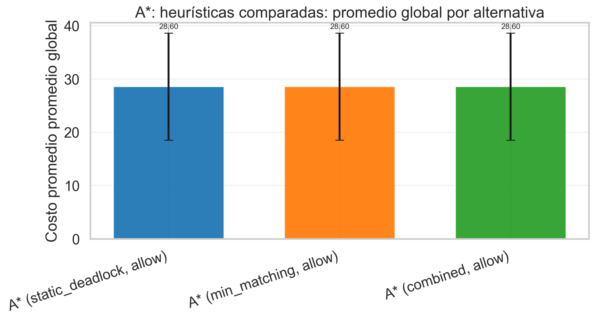
Frontera global
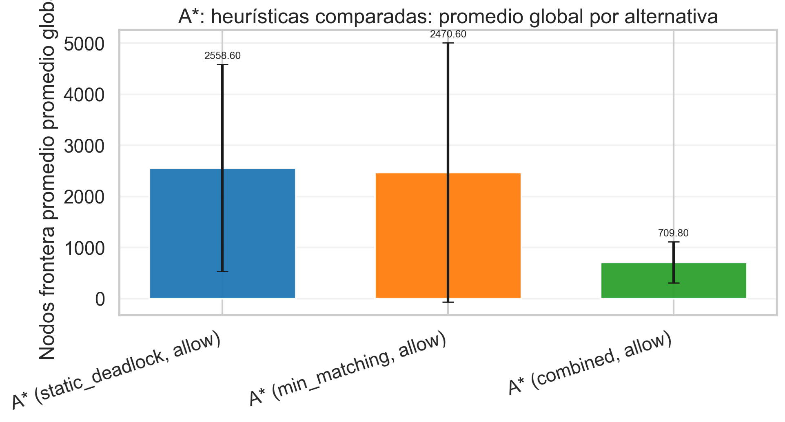
Nodos globales
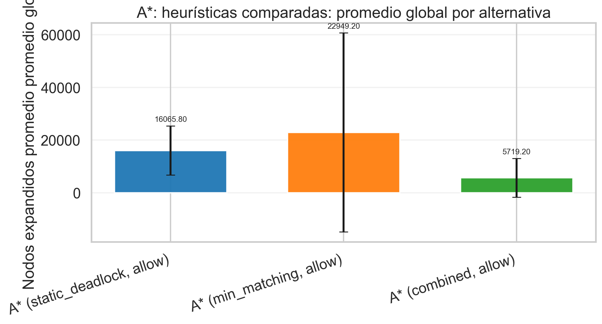
Tiempo global
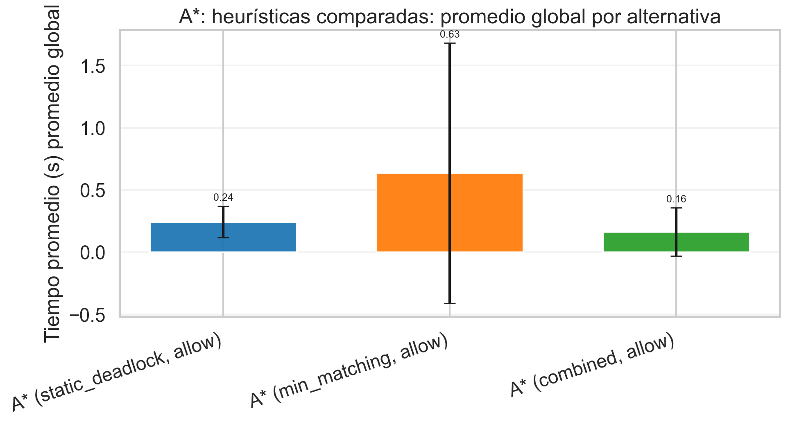
- `A* (combined)` es la mejor heuristica integral del trabajo.
- Contra `A* (static_deadlock)` reduce 64.4% los nodos y 72.3% la frontera final.
- Contra `A* (min_matching)` reduce 75.1% los nodos y 74.1% el tiempo.
- Lectura fina: en `Nivel 1` y `Nivel 5`, `static_deadlock` puede ganar en tiempo, lo que prueba que el overhead heuristico importa.
- Concluson presentable: cuando el costo queda empatado, la mejor heuristica es la que reduce exploracion sin inflar el tiempo.
Slide clave: fija el rol de `combined`, `min_matching` y `static_deadlock` antes de pasar a las familias de algoritmos.
4 / 17
4. BFS vs A*
Los optimos: misma solucion, costo de busqueda muy distinto
Esta comparacion conviene abrirla con costo y nodos: primero mostrar que el resultado final es el mismo y despues exhibir el precio que paga cada estrategia.
Mismo costo por nivel
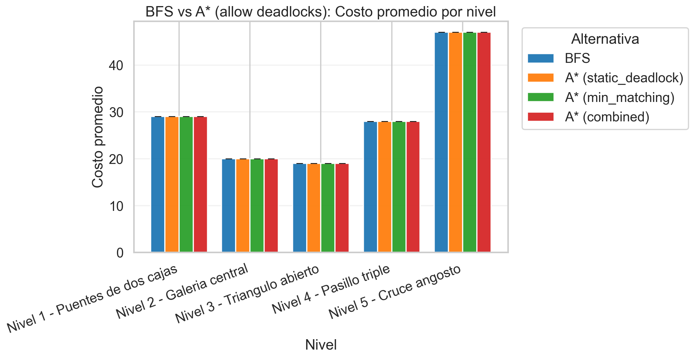
La diferencia real: nodos
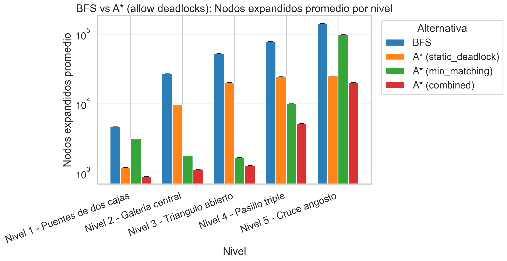
- Idea central: la comparativa no es "quien resuelve mejor", sino "quien paga menos para resolver igual de bien".
- `A* (combined)` vs `BFS`: 90.7% menos nodos, 95.0% menos frontera y 66.5% menos tiempo.
- Primer escalon de mejora: pasar de desinformado a informado.
- Segundo escalon: dentro de `A*`, usar una heuristica compuesta y no una senal parcial.
Mensaje oral sugerido: `A* (combined)` conserva la garantia de `BFS`, pero a una fraccion del costo de busqueda.
5 / 17
4. BFS vs A*
Deep dive optimo: frontera, nodos y tiempo nivel por nivel
La lectura conjunta evita una conclusion simplista: `combined` es el ganador integral, aunque no siempre sea el mas rapido en cada nivel aislado.
Frontera final
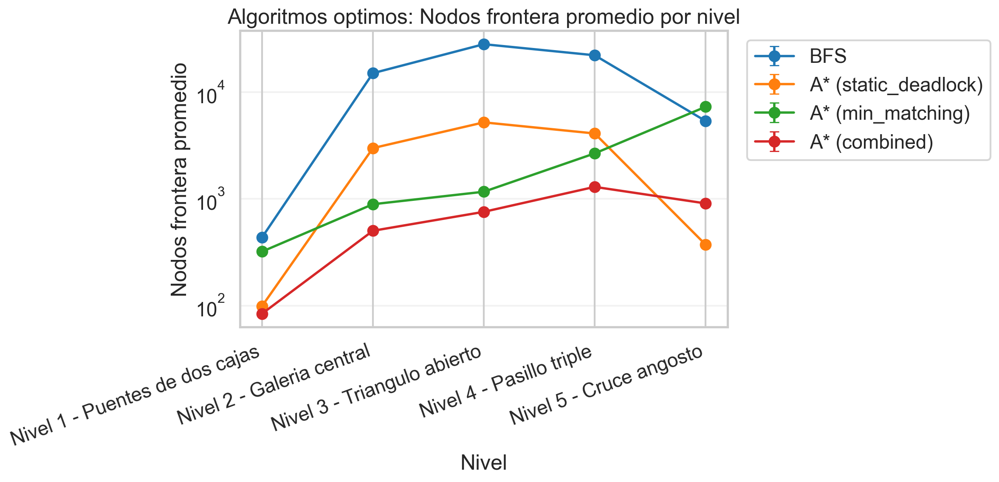
Nodos expandidos
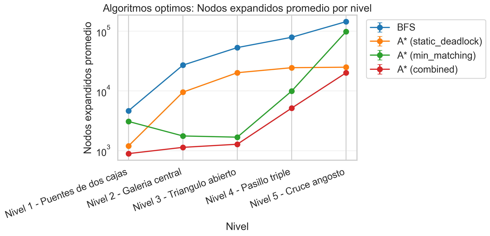
Tiempo
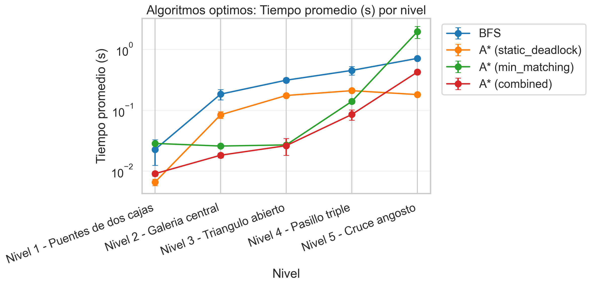
Inferencia: el `Nivel 5` obliga a cruzar metricas; la frontera sola sobrevalora a `static_deadlock`.
6 / 17
5. BFS con poda
Que cambia cuando a BFS solo se le agrega prune
La poda no vuelve a `BFS` mejor que `A* (combined)`, pero si lo saca del lugar de baseline ingenuo y lo acerca a heuristicas mas flojas.
Frontera mixta: BFS (prune) vs A* (allow)
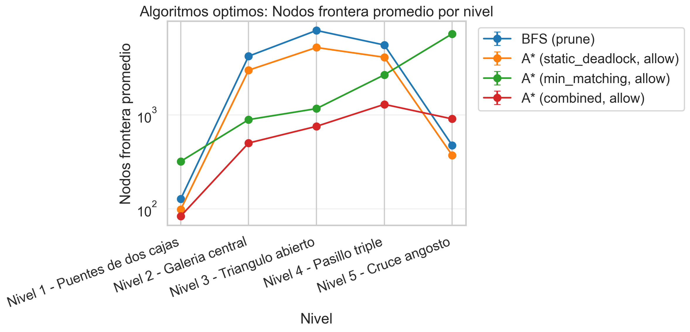
Nodos: donde pasa a competir
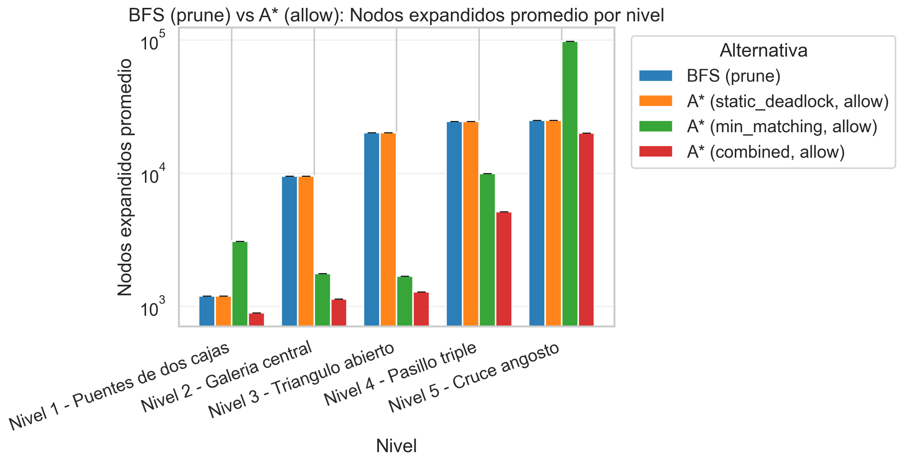
- Hallazgo mas fuerte: una buena poda puede valer mas que una heuristica admisible pero mal alineada.
- `BFS (prune)` incluso supera a `A* (min_matching, allow)` en `Cruce angosto`.
- Conclusion conceptual: podar y ordenar no son lo mismo; ambas cosas aportan y se pueden separar experimentalmente.
Mensaje oral sugerido: primero conviene limpiar el espacio de estados; despues conviene guiar bien la busqueda.
7 / 17
5. BFS con poda
El efecto de prune sobre BFS es estructural, no marginal
Estas dos figuras muestran una mejora causal limpia: el costo de solucion se preserva y lo que cae es la explosion combinatoria.
Frontera final: BFS allow vs BFS prune
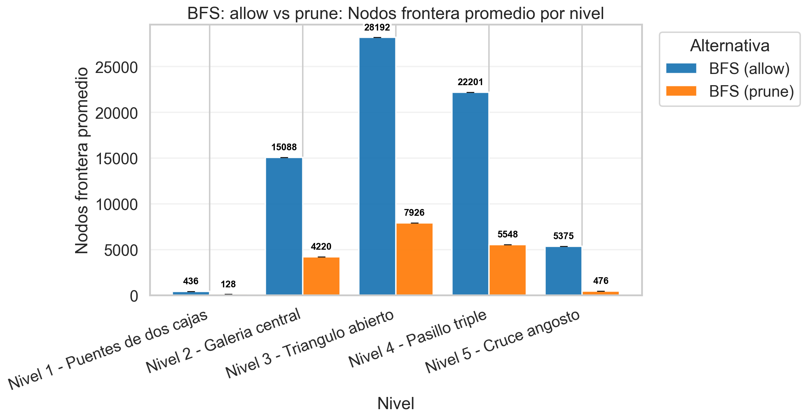
Nodos: BFS allow vs BFS prune
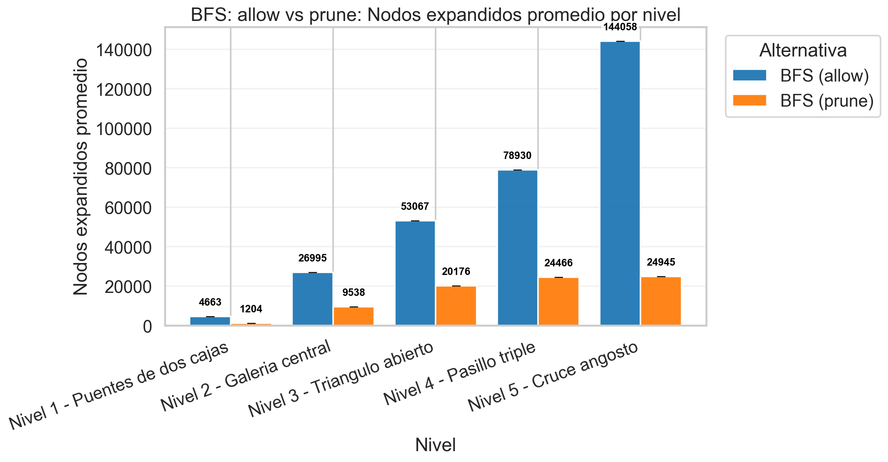
- `Cruce angosto` es el mejor ejemplo: la poda reduce 91.1% la frontera y 82.7% los nodos.
- En BFS, podar deadlocks evita generar capas enteras de estados muertos.
- Si hubiera que justificar una sola optimizacion de espacio de estados para BFS, estas dos figuras alcanzan.
Interpretacion: en BFS la poda mejora un algoritmo ya bueno; no corrige calidad, pero si achica mucho el costo operacional.
8 / 17
6. DFS vs Greedy
Desinformado vs informado: donde mas se nota el valor heuristico
Para contar esta historia conviene mezclar costo, nodos y tiempo. Asi se ve que la mejora de `Greedy` sobre `DFS` no es solo de velocidad: tambien es de calidad de solucion.
Costo medio por alternativa
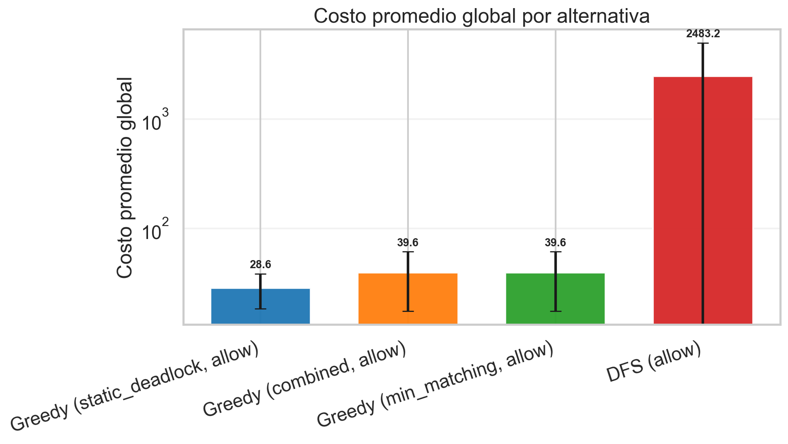
Nodos expandidos
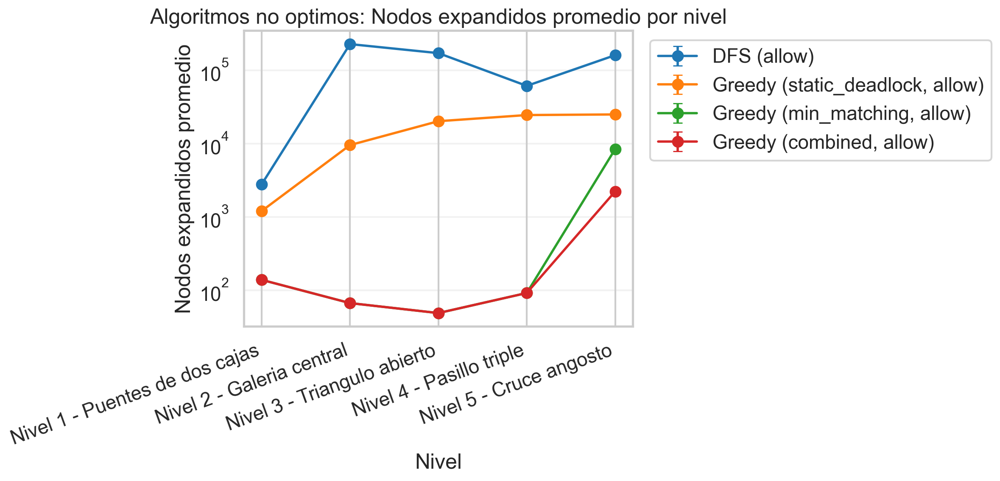
Tiempo
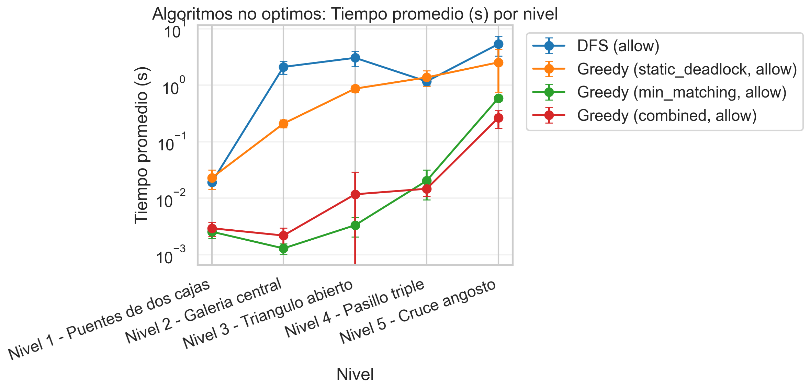
Lectura fuerte: frente a `DFS (allow)`, `Greedy (combined)` reduce 98.4% del costo y 99.6% de los nodos.
9 / 17
6. DFS vs Greedy
La frontera final puede engañar, y esta comparacion lo deja clarisimo
Esta slide junta las figuras que mejor muestran por que `frontier_count` necesita contexto y como la poda reubica a `DFS` sin volverlo competitivo frente a los informados.
Frontera en no optimos
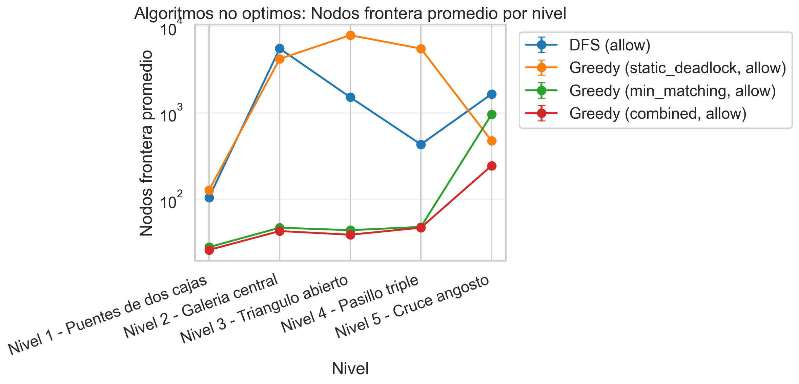
Grouped bar: DFS vs Greedy
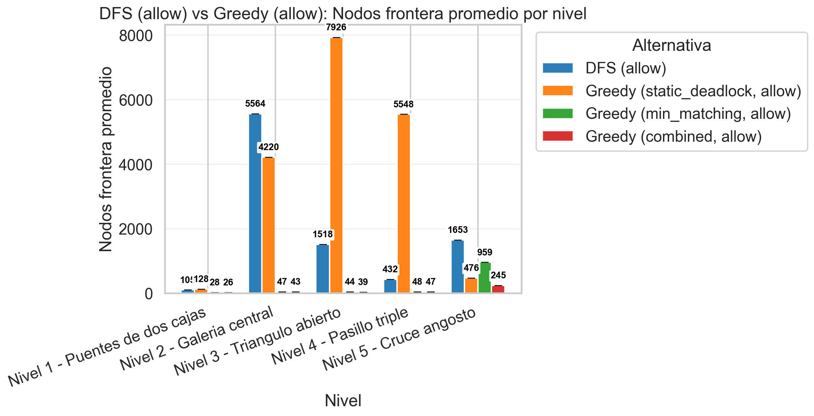
Donde queda DFS despues de podar
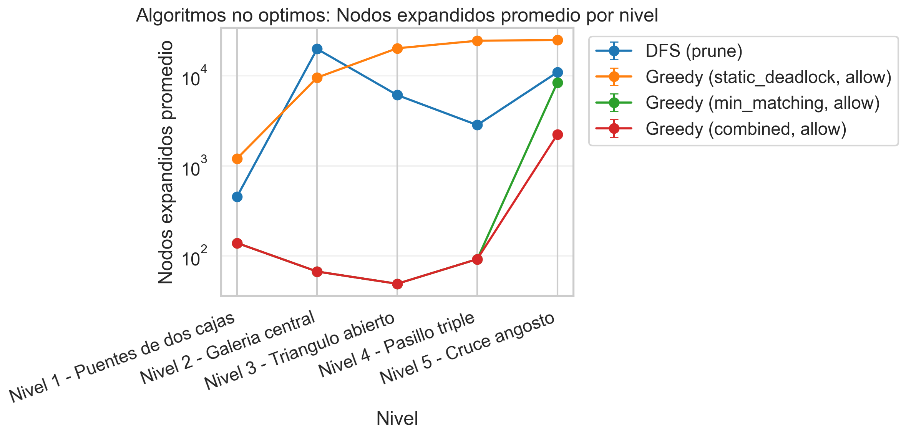
Concluson presentable: frontier final no resume complejidad; en DFS el drama estaba en las excursiones profundas, no en el ancho final de la frontera.
10 / 17
7. Greedy vs A*
Los dos informados: el precio experimental de exigir optimalidad
Esta comparacion es central para la defensa conceptual del trabajo. `Greedy` explora muchisimo menos, pero `A*` conserva la garantia de costo minimo.
Costo por nivel
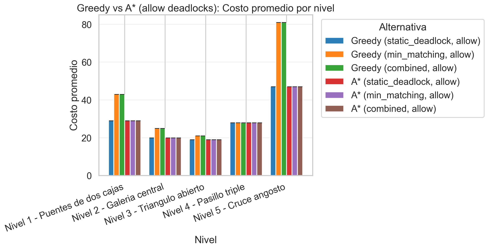
Nodos expandidos
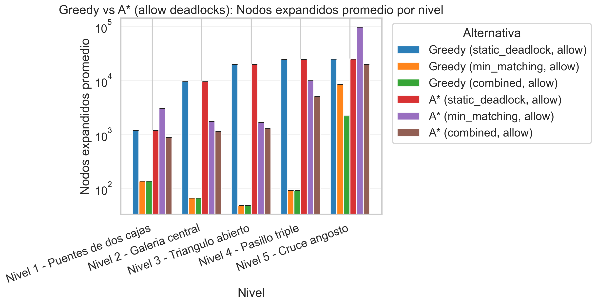
Tiempo
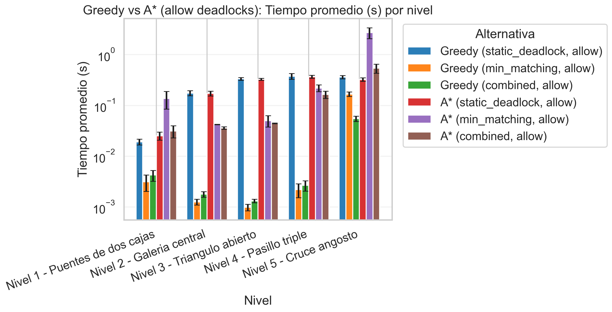
Dato para enfatizar: `Greedy (combined)` es 92.0% mas rapido que `A* (combined)`, pero con costo medio 38.5% peor.
11 / 17
7. Greedy vs A*
Deep dive: en expansiones pesa mas la familia del algoritmo que la heuristica puntual
Esta es una de las pocas slides donde conviene repetir un grafico ya usado: sirve para mostrar que "elegir `Greedy` o `A*`" cambia mas que elegir entre dos heuristicas dentro de una misma familia.
Grouped bar: Greedy vs A*

Repeticion util: nodos globales en A*
- Idea de modelado: si el objetivo principal fuera bajar nodos, la decision mas grande no es la heuristica sino la familia del algoritmo.
- `A* (combined)` sigue siendo la mejor opcion si el costo debe ser optimo.
- `Greedy (combined)` aparece como el mejor algoritmo practico cuando se tolera suboptimalidad moderada.
Lectura de presentacion: la optimalidad tiene un impuesto visible y medible.
12 / 17
8. BFS vs DFS
Sin poda: la comparacion clasica favorece a BFS casi sin matices
Conviene mostrar estas tres figuras juntas porque solo asi se entiende la trampa de `DFS`: a veces parece barato, pero entrega soluciones dramaticamente peores.
Costo por nivel
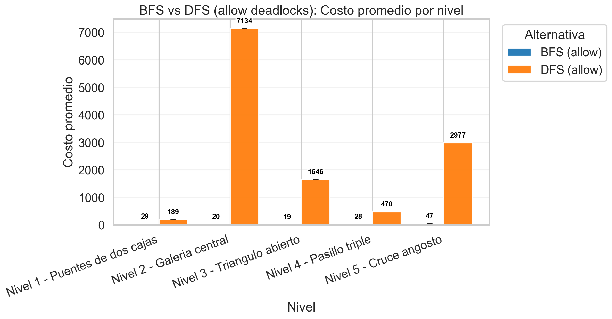
Nodos expandidos
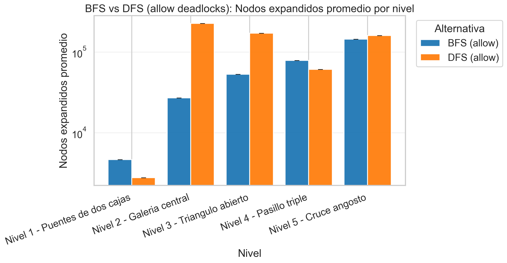
Tiempo
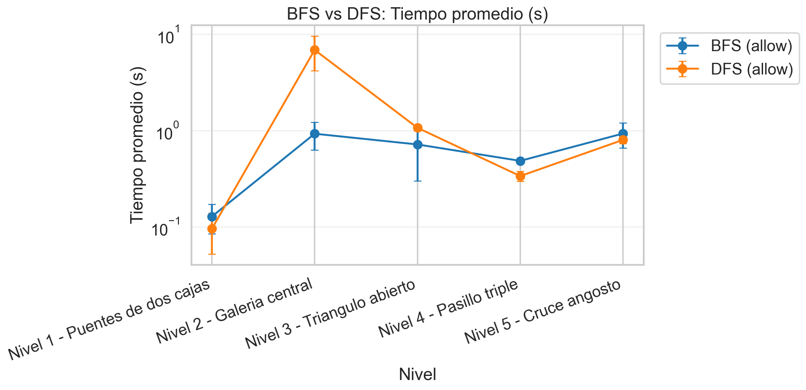
Lectura fuerte: medir nodos o tiempo sin mirar costo puede hacer parecer razonable a una estrategia profundamente miope.
13 / 17
8. BFS vs DFS
Con poda: cambia el ranking de eficiencia, pero no cambia la calidad
Esta es una de las mejores secciones para mostrar que una mejora operacional fuerte no equivale a una mejora de solucion.
Error bars de costo
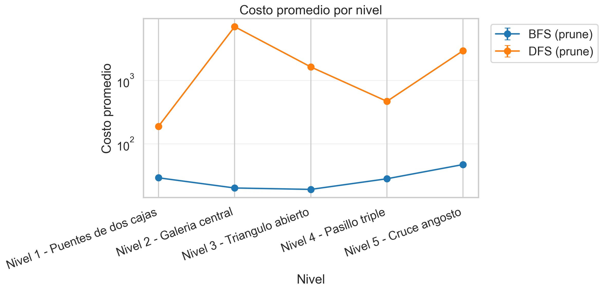
Costo por nivel
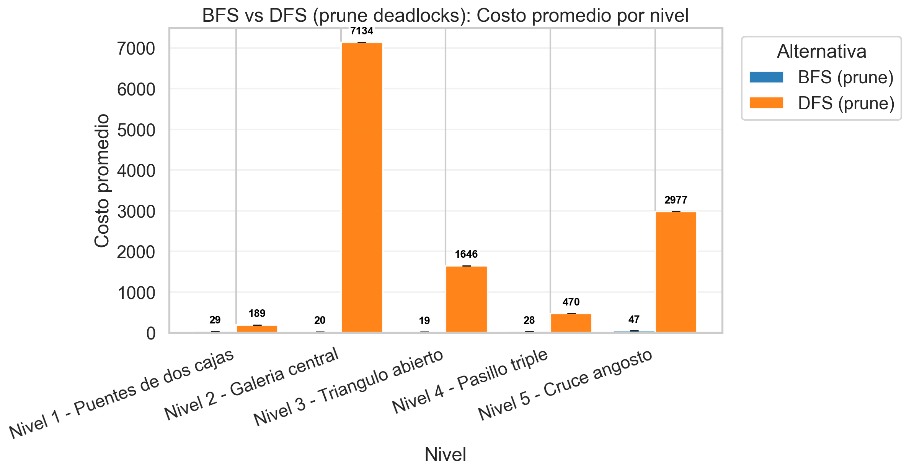
Nodos expandidos
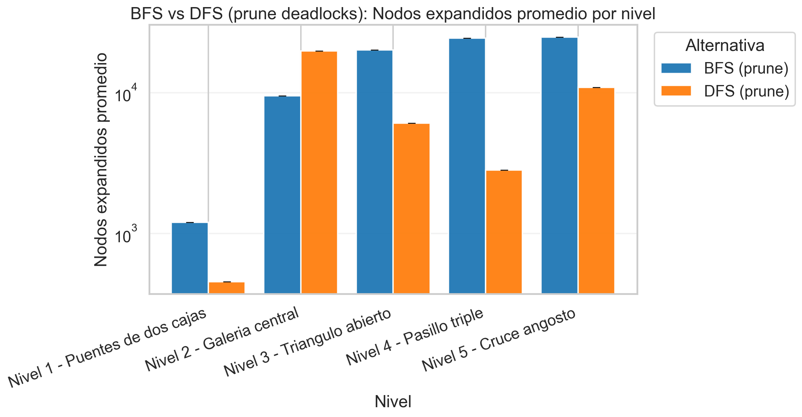
Mensaje oral sugerido: la poda rescata la eficiencia de `DFS`, pero no corrige su sesgo de calidad.
14 / 17
9. DFS allow vs prune
DFS es el algoritmo donde la poda cambia mas el panorama
Estas tres figuras son ideales para contar una leccion causal: los deadlocks eran buena parte del problema operacional de `DFS`.
Frontera final
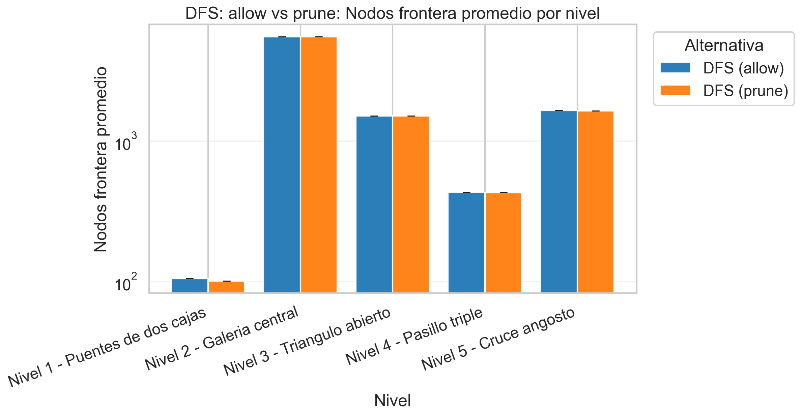
Nodos expandidos
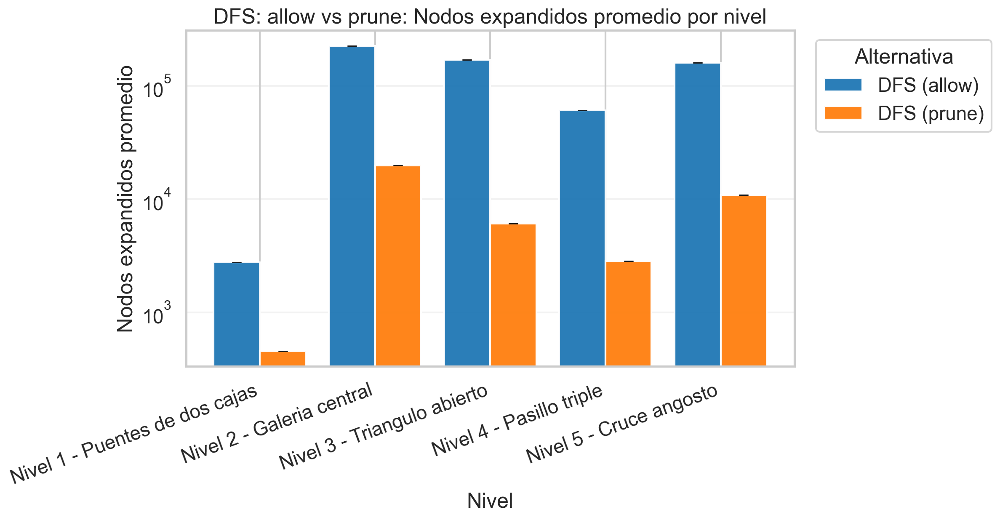
Tiempo
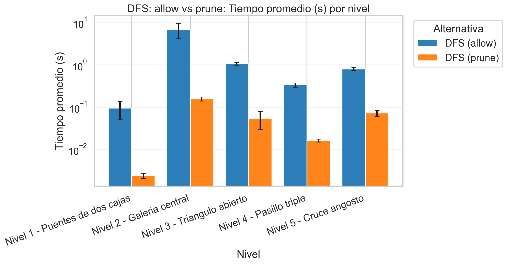
Lectura fuerte: en DFS el drama no era el ancho final de la frontera, sino las excursiones profundas hacia estados muertos.
15 / 17
10. Prune en contexto
Una misma mejora no impacta igual en BFS y en DFS
Esta slide vuelve a reunir los cuatro graficos de sensibilidad a la politica para mostrar el contraste completo. Aca se ve por que `prune` es tan importante como componente de la solucion.
BFS: frontera
BFS: nodos
DFS: frontera
DFS: nodos
- En BFS, `prune` mejora un algoritmo ya correcto en costo.
- En DFS, `prune` rescata un algoritmo que sin poda hacia demasiado trabajo inutil.
- Asimetria clave: la misma tecnica mejora a ambos, pero por razones operativas distintas.
- Mensaje de arquitectura: la calidad de una solucion en Sokoban sale de combinar estrategia de busqueda con conocimiento estructural del dominio.
Slide de sintesis: explica por que la poda no es un detalle menor sino una parte central del resultado final.
16 / 17
11. Cierre
Que recomendaria segun el objetivo de la corrida
La presentacion puede cerrar con una matriz de decision simple y una frase final: en Sokoban no alcanza con elegir "el algoritmo correcto"; hay que combinar estrategia, heuristica y poda.
| Objetivo | Algoritmo recomendado | Por que |
|---|---|---|
| Optimalidad con buena eficiencia | `A* (combined)` | Mismo costo que `BFS`, pero con mucha menos exploracion y mejor robustez global. |
| Velocidad practica | `Greedy (combined)` | Es el mejor compromiso operativo cuando se tolera suboptimalidad moderada. |
| Baseline desinformado fuerte | `BFS (prune)` | La poda lo vuelve mucho mas competitivo sin perder optimalidad. |
| Mostrar impacto de prune | `DFS (allow)` vs `DFS (prune)` | Es la comparacion donde el efecto causal de la poda se ve con mas claridad. |
- Frase 1: `A* (combined)` es la mejor respuesta cuando importa costo optimo y tambien importa escalar.
- Frase 2: `Greedy (combined)` muestra que la informacion heuristica puede ganar muchisima eficiencia si se acepta renunciar a optimalidad estricta.
- Frase 3: `static_deadlock` es valioso, pero como parte de una solucion mas rica: podar solo no reemplaza a una heuristica que sepa ordenar.
- Frase final: la mejor performance aparece cuando se combinan una estrategia adecuada, una heuristica realmente informativa y una poda estructural del dominio.
Cierre sugerido: "en Sokoban, los mejores resultados salen de combinar inteligencia de algoritmo e inteligencia del problema".
17 / 17